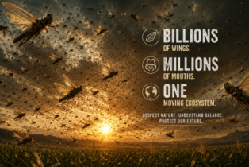

Locust swarms can reach densities of 40–80 million insects per km², consuming the food of 35,000 people in a single day, and stripping a landscape bare within hours.
Biology
Locusts are not a separate species — they are the same insects as common grasshoppers. Under crowded conditions, a chemical trigger causes a dramatic physical and behavioural transformation into the swarming "gregarious" phase.
Physical contact with other locusts causes a surge of serotonin in the nervous system. This single neurochemical change transforms a solitary creature into a social, migratory, and ravenous swarming insect.
Locust swarms ride wind currents with remarkable efficiency, often travelling at 15–20 km/h. They follow the Inter-Tropical Convergence Zone — the belt of rainfall that creates fresh vegetation ahead of them.
Locusts consume grasses, leaves, bark, flowers, seeds, and crops indiscriminately. A swarm in flight will eat mid-air. On the ground, they can strip every plant in a field down to bare stalks in minutes.
A female lays 80–160 eggs per pod, up to 3 times in her short life. In ideal conditions — warm soil, good rainfall — a locust population can multiply 20-fold in just three months.
Solitary-phase locusts are green or brown — camouflaged. Gregarious-phase locusts turn vivid yellow and black, signalling toxicity from plant compounds they accumulate. The brighter the colour, the more dangerous the swarm.
Agricultural threat
Rice, wheat, maize, sorghum, millet, pulses — all consumed with equal efficiency. Months of farmwork can be erased in hours.
The 2019–2021 East Africa outbreak threatened food supplies for over 25 million people across Kenya, Ethiopia, and Somalia.
Historic swarms triggered genuine famines — the 1874 Rocky Mountain Locust devastation across the US midwest left pioneer farming communities destitute.
Not just crops — locusts strip pastureland bare, leaving livestock without grazing and compounding economic losses for rural communities.
Swarms don't respect national borders. A single event can simultaneously impact a dozen countries, stretching international aid and agricultural response systems.
Emergency pesticide campaigns, aerial spraying operations, and farmer compensation programmes can cost governments hundreds of millions of dollars per outbreak.
History
The largest locust swarm ever recorded blanketed 510,000 square miles across the US midwest — larger than California. An estimated 12.5 trillion insects consumed wheat, corn, and homestead crops from Canada to Texas, causing the equivalent of billions in damages. The species was extinct by 1902.
Species now extinctA catastrophic swarm devastated crops across Palestine, Syria, and Lebanon during World War I, contributing to a famine that killed approximately 200,000 people — compounding the already severe wartime food shortages in the region.
Famine eventOne of the worst 20th-century outbreaks swept through West Africa, North Africa, and the Middle East. Over 2.5 billion hectares were threatened. A multinational aerial spraying campaign costing over $300 million eventually brought it under control.
$300M control costClimate-driven cyclones created ideal breeding conditions across the Arabian Peninsula and Horn of Africa. Swarms spread into Pakistan, India, Iran, and across 23 African nations. The UN's FAO called it the worst outbreak in 70 years for some countries. Over 25 million people faced food insecurity.
25M+ people affectedEconomics
Market size
Beyond direct control costs, locusts cause an estimated $1.5–3 billion in crop losses annually during non-outbreak years — rising to $8–12 billion during major events. The economics of the locust problem are enormous.
Ecology
Catastrophic crop failures and the famines they trigger would be eliminated, directly protecting food security for hundreds of millions of people.
Billions of dollars in emergency pesticide, aerial spraying, and agricultural aid spending would be saved every outbreak cycle.
Reduced pesticide spraying over vast areas would lower chemical exposure for ecosystems, wildlife, and farming communities.
Smallholder farmers in Africa, South Asia, and the Middle East — the most vulnerable — would gain greater economic stability and food security.
Global cereal and food commodity markets would see reduced price volatility from supply shocks caused by locust events.
Locusts are a critical food source for hundreds of bird species, lizards, frogs, snakes, spiders, and small mammals — especially in arid and semi-arid ecosystems.
Dead locusts decompose into the soil, returning nitrogen and organic matter that enrich depleted land in some of the world's driest environments.
In many cultures across Africa, the Middle East, and Asia, locusts are a traditional high-protein food source. Their disappearance would remove a free nutritional resource for poor communities.
Grazing by locust swarms can — in limited contexts — clear dense vegetation and trigger ecological regeneration cycles in grassland systems.
As with any extinction, removing a species creates ecological vacuums that are often filled unpredictably, sometimes by more harmful replacements.
The other side
Swarms attract extraordinary concentrations of birds — bee-eaters, storks, kites, and raptors follow them across continents, gorging on easy prey. A single outbreak can sustain wildlife populations for months.
Dead and decaying locusts deposit high-nitrogen biomass directly into soils. In some arid regions, post-swarm years show measurable increases in soil fertility and subsequent plant growth.
Locusts are consumed in over 30 countries. They are 60–75% protein by dry weight, rich in iron and zinc. In East Africa, roasted locusts are harvested and sold during swarms — a silver lining for some communities.
Locusts' phase transformation — one of the most dramatic behavioural shifts in the animal kingdom — has driven major discoveries in neuroscience, crowd behaviour, and even urban traffic modelling.
Did you know?
Locusts are one of the Ten Plagues of Egypt in the Bible and are mentioned in the Quran. They appear in ancient Mesopotamian, Chinese, and Indian texts as symbols of divine punishment — and in some traditions, as permitted food.
The self-organised movement of locust swarms — millions of individuals moving as one without a leader — directly inspired mathematical models now used for traffic engineering, crowd management, and autonomous vehicle navigation.
Locusts will eat each other when food is scarce. The marching behaviour of hopper bands is partly driven by each locust trying to eat the one in front — and avoid being eaten by the one behind. The swarm is, at its core, a stampede.
The Rocky Mountain Locust, once the most abundant insect in North America, was extinct by 1902 — likely wiped out when settlers ploughed up the river valleys where the insect laid its eggs. The world's largest known swarm is now gone forever.
Warmer Indian Ocean temperatures fuel more cyclones over the Arabian Peninsula, creating ideal breeding conditions. Scientists project that locust outbreak frequency and severity will increase significantly by 2050 as global temperatures rise.
Locusts and shrimp are both arthropods and share surprisingly similar flavour profiles when cooked. Across East Africa and the Middle East, they are fried, roasted, or dried and ground into flour. Chefs in Europe are now adding them to gourmet menus.
The FAO's Desert Locust Information Service monitors swarm formation using satellite vegetation data, weather models, and ground reports from 30 countries — issuing global alerts when new swarms form in remote breeding zones.
Scientists discovered in 2009 that injecting a single grasshopper with serotonin triggers full gregarious transformation — colour change, appetite increase, and social behaviour. It is the same neurotransmitter linked to human mood, appetite, and social behaviour.
Food chain
Bee-eaters, storks, kites, and raptors follow swarms across continents
Ground-dwelling species gorge when hopper bands march through grassland
Monitor lizards and agamas feed heavily during locust events in Africa and Asia
Amphibians near wetlands benefit enormously from locust population booms
Large orb-weavers and wolf spiders take locusts as an opportunistic food source
Desert foxes in Africa and Arabia rely on locusts as a seasonal protein supplement
Baboons and monkeys actively seek out locust swarms as a high-energy food bonanza
Eaten across 30+ countries — roasted, fried, or dried; 70% protein by dry weight
Every locust swarm triggers a cascade of ecological abundance for the predators that follow it.
Regional history
One of the most severe locust outbreaks in Indian recorded history swept across Punjab, Sindh, Rajasthan, and the United Provinces over five consecutive years. Vast swarms devastated wheat and cotton harvests, triggering acute food shortages across large parts of British India. The colonial administration launched one of the first organised aerial spray campaigns in the subcontinent in response.
5-year consecutive outbreakDesert locusts invaded Rajasthan in large numbers from breeding grounds in Pakistan and Iran, destroying crops in Barmer, Jaisalmer, Jodhpur, and Bikaner districts. Thousands of hectares of pearl millet, mustard, and clusterbean crops were affected. Indian authorities deployed aerial and ground spraying across border districts to contain the outbreak before it spread eastward.
Border districts severely hitThe largest locust invasion of India in nearly 30 years struck in the summer of 2020, coinciding with the COVID-19 lockdown. Swarms from Pakistan entered Rajasthan, Madhya Pradesh, Uttar Pradesh, and Gujarat — at one point threatening Delhi's outskirts. Pakistan simultaneously declared a national emergency as locust swarms devastated crops in Sindh and Punjab. India deployed over 200 spray teams and used drones for the first time in locust control. Estimated crop losses ran into thousands of crores of rupees.
National emergency in Pakistan · Drone control debut in IndiaClimate science
Rising sea surface temperatures generate more frequent and intense tropical cyclones over the Arabian Sea.
Cyclones dump unusual amounts of rain on the Arabian Peninsula's desert interior — areas that are normally bone dry.
Heavy rains turn barren sand into temporary vegetation — perfect breeding habitat for locusts, which require moist soil for egg-laying.
With abundant food and moist soil, locust populations multiply 20-fold within months before winds carry them toward Africa and South Asia.
Swarms reach farmland in East Africa, South Asia, and the Middle East — threatening food security for hundreds of millions of people.
Frontier solutions
Machine learning systems analyse satellite vegetation indices and soil moisture data to predict breeding hotspots weeks before swarms form — giving governments critical early warning time.
Autonomous drone fleets can cover remote terrain inaccessible to vehicles or aircraft, applying biopesticides with pinpoint accuracy and minimal collateral damage to surrounding ecosystems.
The FAO's Desert Locust Information Service now integrates AI models trained on 70+ years of outbreak data, weather patterns, and vegetation maps to forecast swarm trajectories up to 10 days in advance.
The biopesticide Metarhizium acridum (Green Muscle) — a naturally occurring fungus — kills locusts without harming birds, mammals, or beneficial insects. It is now deployed across Africa and Central Asia.
Mobile platforms like FAO's eLocust3m allow field workers and farmers to report sightings in real time via GPS-tagged photos, feeding data directly into global outbreak maps accessible to response teams worldwide.
Regional organisations like CLCPRO (Africa) and SWAC are developing joint rapid-response protocols — shared airfleets, pesticide stockpiles, and coordinated command systems — to eliminate the days lost to diplomatic delays.
Future food
Locusts are among the most protein-dense foods on Earth — comparable to beef but requiring a fraction of the land, water, and feed to produce.
From roasted locusts in East Africa to fried locusts in Thailand, Mexico, and the Middle East — this is not a new idea. It is a traditional food source being rediscovered.
Producing 1 kg of locust protein requires 12 times less feed than beef, generates far less greenhouse gas, and uses minimal water — making it one of the most sustainable protein sources on Earth.
The global edible insect market is projected to reach $1.4 billion by 2030. Companies in the Netherlands, UK, and Kenya are already farming locusts commercially for food and animal feed.
Wild locusts during outbreaks are contaminated with pesticides from aerial spraying campaigns — making outbreak-harvested locusts unsafe to eat. Commercial farming separates the food source from the pest problem.